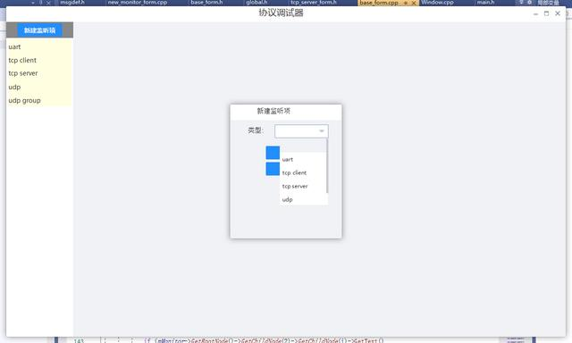
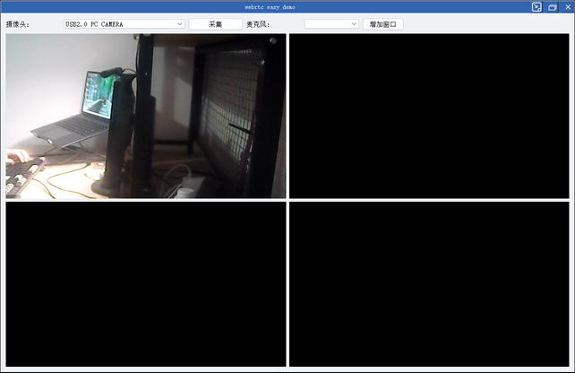
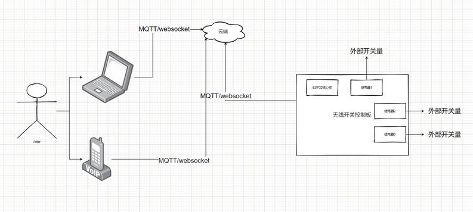
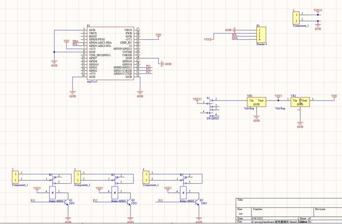
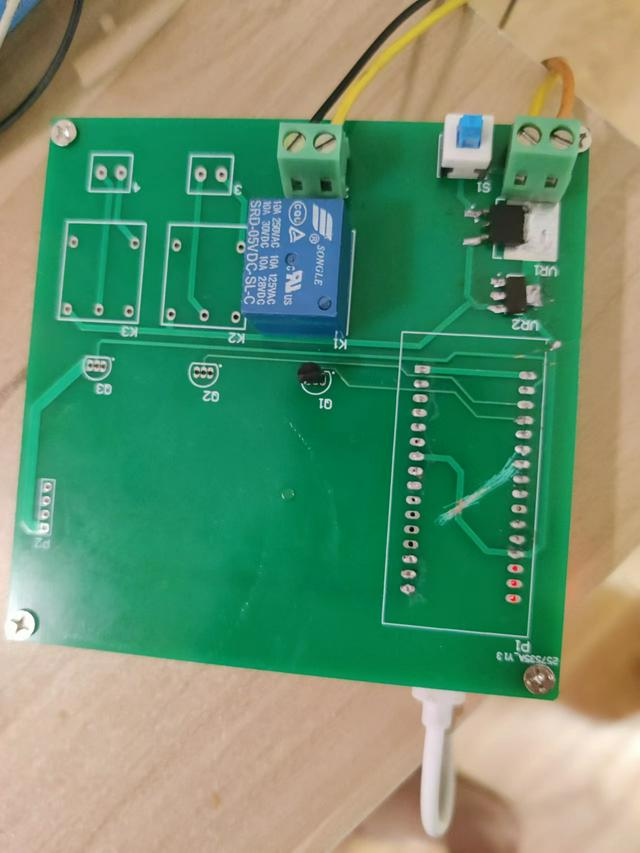

"标准rtsp推流信令流程如下
OPTIONS rtsp://192.168.1.108:554/live.sdp RTSP/1.0
CSeq: 1
User-Agent: Lavf57.71.100
RTSP/1.0 200 OK
Server: EasyDarwin/7.3 (Build/17.0325; Platform/Win32; Release/EasyDarwin; State/Development; )
Cseq: 1
Public: DESCRIBE, SETUP, TEARDOWN, PLAY, PAUSE, OPTIONS, ANNOUNCE, RECORD
ANNOUNCE rtsp://192.168.1.108:554/live.sdp RTSP/1.0
Content-Type: application/sdp
CSeq: 2
User-Agent: Lavf57.71.100
Content-Length: 325
v=0
o=- 0 0 IN IP4 127.0.0.1
s=Media Server
c=IN IP4 192.168.1.108
t=0 0
a=tool:libavformat 57.71.100
m=video 0 RTP/AVP 96
a=rtpmap:96 H264/90000
a=fmtp:96 packetization-mode=1; sprop-parameter-sets=Z2QAHqw0ygsBJ/wFuCgoKgAAB9AAAYah0MALFAALE9d5caGAFigAFieu8uFA,aO48MA==; profile-level-id=64001E
a=control:streamid=0
RTSP/1.0 200 OK
Server: EasyDarwin/7.3 (Build/17.0325; Platform/Win32; Release/EasyDarwin; State/Development; )
Cseq: 2
SETUP rtsp://192.168.1.108:554/live.sdp/streamid=0 RTSP/1.0
Transport: RTP/AVP/TCP;unicast;interleaved=0-1;mode=record
CSeq: 3
User-Agent: Lavf57.71.100
RTSP/1.0 200 OK
Server: EasyDarwin/7.3 (Build/17.0325; Platform/Win32; Release/EasyDarwin; State/Development; )
Cseq: 3
Cache-Control: no-cache
Session: 132169028622239
Date: Tue, 13 Nov 2018 02:49:48 GMT
Expires: Tue, 13 Nov 2018 02:49:48 GMT
Transport: RTP/AVP/TCP;unicast;mode=record;interleaved=0-1
RECORD rtsp://192.168.1.108:554/live.sdp RTSP/1.0
Range: npt=0.000-
CSeq: 4
User-Agent: Lavf57.71.100
Session: 132169028622239
RTSP/1.0 200 OK
Server: EasyDarwin/7.3 (Build/17.0325; Platform/Win32; Release/EasyDarwin; State/Development; )
Cseq: 4
Session: 132169028622239
博主用的是海思rtsp 3518开发板，该开发板由于文件系统较小，只有uclibc的库，没有glibc库和glibc++的支持 ，因此只能运行c语言编程的程序。 代码 gitee.com/290198252
流程解释：
要使用TCP连接，RTSP客户端需要在SETUP阶段请求TCP连接。SETUP命令中应该包括如下格式的Transport：
Transport: RTP/AVP/TCP;interleaved=0-1
上述Transport将告诉服务端使用TCP协议发送媒体数据，并且使用信道 0 和 1 对流数据以及控制信息进行交织。详细说来，使用偶数信道作为数据
传输信道，使用奇数信道作为控制信道（数据信道 + 1）。所以，如果你设定数据信道为 0 ，那控制信道应该是 0 + 1 = 1。
SETUP之后，RTP数据将通过用来发送RTSP命令的TCP Socket进行发送。RTP数据将以如下格式进行封装：
| magic number | channel number | embedded data length | data |
RTP数据标识符 magic number:"$"
channel number - 1 byte value to denote the channel
信道数字:用来指示信道
embedded data length - 2 bytes to denote the embedded data length
数据长度 :用来指示插入数据长度
data - data packet, ie RTP packet, with the total length of the embedded data length
数据:比如说RTP包，总长度与上面的数据长度相同
"

关于博主
an actually real engineer
通信工程专业毕业,7年开发经验
技术栈:
精通c/c++
精通golang
熟悉常见的脚本,js,lua,python,php
熟悉电路基础,嵌入式,单片机
耕耘领域:
服务端开发
嵌入式开发
>gin接口代码CURD生成工具
sql ddl to struct and markdown,将sql表自动化生成代码内对应的结构体和markdown表格格式,节省宝贵的时间。
qt .ui文件转css文件
duilib xml 自动生成绑定控件代码
协议调试器
基于lua虚拟机的的协议调试器软件 支持的协议有:
串口
tcp客户端/服务端
udp 组播/udp节点
tcp websocket 客户端/服务端
软件界面
使用例子: 通过脚本来获得接收到的数据并写入文件和展示在界面上
下载地址和源码
webrtc easy demo
webrtc c++ native 库 demo 实现功能:
基于QT
webrtc摄像头/桌面捕获功能
opengl渲染/多播放窗格管理
janus meeting room

下载地址和源码
wifi,蓝牙 - 无线开关
实现功能:
通过wifi/蓝牙实现远程开关电器或者其他电子设备
电路原理图:
实物图:
